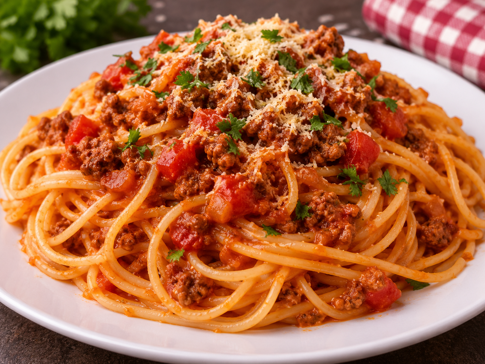

Página Principal
Receita de Macarrão à Bolonhesa

Uma receita prática e saborosa de macarrão à bolonhesa rende cerca de 4 porções
fica pronta em torno de 30 a 40 minutos.
Ingredientes
- 500 g de macarrão (espaguete, fettuccine ou talharim)
- 500 g de carne moída (patinho ou acém)
- 1 cebola média picada
- 2 a 3 dentes de alho picados
- 1 a 2 colheres (sopa) de azeite ou óleo
- 400 g a 520 g de molho, polpa ou tomate pelado
- 1/2 xícara da água do cozimento do macarrão (ou um pouco de água)
- Temperos: sal, pimenta-do-reino, folha de louro ou cheiro-verde a gosto
- 100 g de queijo parmesão ralado para finalizar
Modo de Preparo
- Refogue a carne: Aqueça o azeite ou óleo em fogo alto,
adicione a carne moída e refogue até secar a água e dourar.
- Tempere: Junte a cebola e o alho, refogue até murchar e tempere com sal,
pimenta-do-reino e louro.
- Apure o molho: Adicione o tomate e a água do cozimento;
cozinhe em fogo baixo a médio até encorpar e reduzir a acidez.
- Cozinhe a massa: Ferva água com sal e cozinhe o macarrão até ficar al dente,
conforme a embalagem.
- Finalize: Escorra a massa, misture ao molho (ou sirva por cima) e
finalize com parmesão ralado e cheiro-verde.